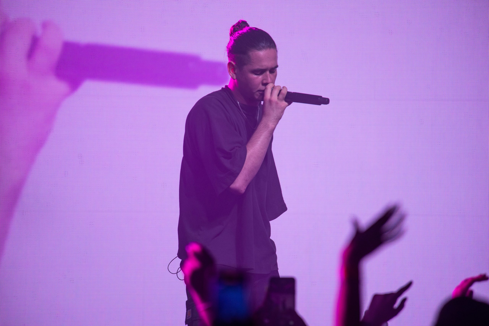
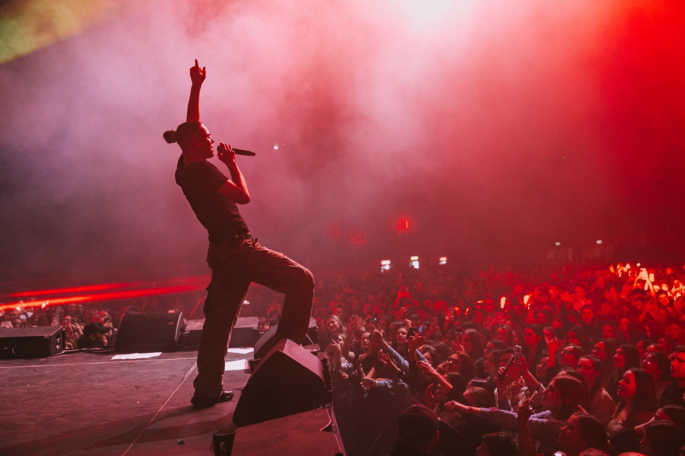
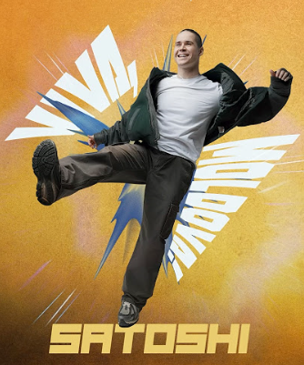

Vlad Sabajuc s-a născut la 13 septembrie 1998 în Cahul, Republica Moldova. Pasiunea sa pentru muzică s-a manifestat încă din copilărie, începând să compună în clasa a șaptea și învățând autodidact să cânte la tobe. În anul 2019,acesta lansează proiectul muzical Satoshi. La începutul anului 2022, Satoshi a semnat cu casa de discuri Versus Artist din cadrul BR Media Group. A studiat la Academia de Muzică, Teatru și Arte Plastice.
|
 |
 |
|
 |
Printre cele mai cunoscute piese ale sale sunt "Bate, vântule", "Viva, Moldova!", "Atâta pot" și "Semafoare".
Asta-i țara mea - Satoshi
Satoshi a lansat numeroase videoclipuri muzicale care au fost difuzate intens pe televiziunile muzicale și platformele online. Videoclipurile sale pun accent pe emoție, atmosferă și poveste, reflectând stările transmise prin muzică și completând mesajul pieselor prin imagini expresive și simbolice.
Satoshi este tânărul care a reușit să cucerească inimile nu doar ale tinerilor, dar și celor mai mari. Prin maniera sa de a cânta, melodiile sale captivante și vocea deosebită are puterea de a transmite mesaje care nu doar sunt simțite de noi ca oameni, dar și ca neam, temele abordate de el fiind nu doar viața de zi cu zi, dar și patria. Satoshi cu adevărat știe cum să mângâie prin muzică.